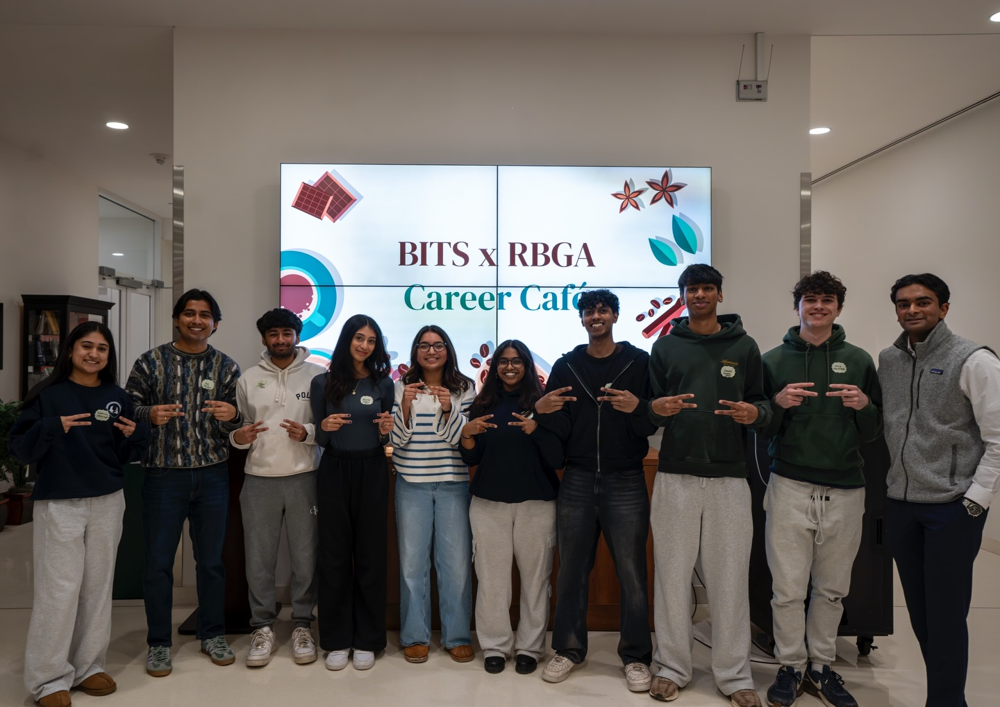

RBGA & BITS Resume Review Workshop
As one of the Business Analytics and Information Technology Representatives for the Rutgers Business Governing Association last year, I helped organize, along with my co-representative, an event called Resume Review Workshop with the Business Information Technology Society. There we presented about the ATS system used to review resumes, and matched underclassmen with upperclassmen who could review their resume and provide feedback.